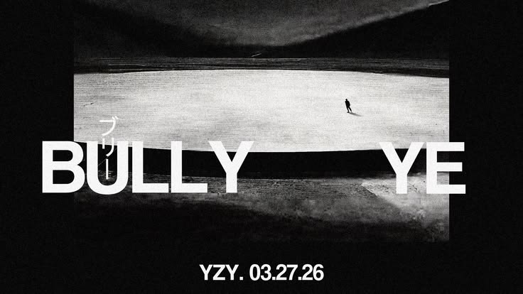

IMAGEN (P): @szpak - DAYORI SHIRO
Bully — Kanye West
Tras varios retrasos y una alta expectativa, Kanye West presentó "Bully", un álbum que marca una nueva etapa en su trayectoria musical y que ha generado atención por su retorno a un enfoque más cercano a sus primeras producciones.
El álbum, compuesto por once canciones, incluye temas como “FATHER”, “KING”, “ALL THE LOVE” y “BULLY”. En este proyecto, el artista retoma elementos del hip-hop con una producción más contenida y deliberada, a diferencia de trabajos recientes, predomina un enfoque introspectivo, con letras centradas en la familia, la identidad y la evolución emocional.
Canciones como “HIGHS AND LOWS” y “SISTERS AND BROTHERS” destacan por su tono reflexivo, mientras que “PUNCH DRUNK” mantiene una energía más directa. En conjunto, el álbum construye un equilibrio entre lo íntimo y lo expresivo, sin perder la intensidad característica de su estilo.
En términos generales, "Bully" ha sido interpretado como un regreso a la figura de “Kanye”, en contraste con la etapa más experimental asociada a “Ye”, lo que sugiere una recuperación parcial de su identidad artística original. Más allá del análisis musical, el proyecto deja una sensación de cercanía emocional y de reencuentro creativo, como si el artista retomara una esencia que muchos seguidores habían sentido distante en los últimos años.